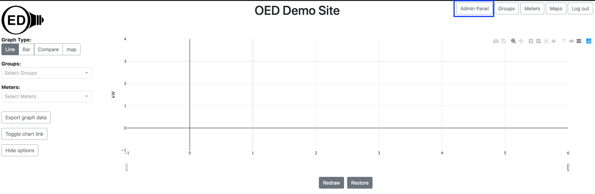

OED Documentation
Site Settings
Version V0.7.0
The latest version of this page is V1.0.0.
Documentation overview
Admin documentation
Information
Site Management
Data Acquisition
Site Installation
User documentation
Documentation versions for this page
These features are only available to select people who oversee the OED site (called admins) so this information is not usually of interest to a general user.
Overview
The main admin page allows admins to change site preferences and control users.
Usage
You must be logged in as an admin to access these features.
On the main OED page, click the "Admin Panel" button in the top, right (highlighted with a blue box) to go to the main admin page as shown in the next figure. 
You will now be on the main admin page as shown in the next figure. Each area of the page is described below. It is important that you click the "Submit" button at the bottom of the page to save your changes to the database. If you do not do this, other users will not see the change and it will be gone the next time you visit your site or refresh your web browser page with OED.
Manage: Users
This allows admins to manage the users on the system. Help on this feature is on the admin user help page.
Default Site Title
Clicking the box below this label will allow you to enter or edit the OED site title shown at the top of each page. You should try to keep the title fairly short so that it does not take up too much space on each page. The title will remain blank until you enter one.
Default Graph Type
When a user first loads OED, you can control the graph type that will appear. The user can still change to another graph type if they wish. The types of graphs you can choose mirror the ones allowed. Simply click the circle next to your choice. The default will be "Line" unless you change it.
Default Bar Stacking
The bar stacking option allows the bar graphic to show as single, stacked bar for each time frame. By default this is off. You can make it default to on by clicking the box next to "Bar Stacking". If checked, you can click to remove this choice.
Default Language
Clicking one of the languages below this label will set OED to use that language for its strings within the application for all users. The default language is "English" until you change it. Users can manually change the language if desired.
Default Time Zone
OED works with time in a time zone neutral way. However, when data is exported from OED, the person may want to have information on the time zone of that data. The dropdown menu contains every possible standard time zone in the world. You can type at the top to search the list. The selected time zone becomes the default value if none is set for the meter. Note this has no impact on what is shown within OED and is strictly for export of data. The site value for time zone is overridden if a value is set for a specific meter.
Details
The map graphic cannot be made the default graphic type at this time. We expect that will change soon.
The popup help is set to be language settable but the translations are not yet done. The help pages on the web (linked from within the app help) are not translated but may be in the future.
Once you set a time zone, you cannot unset the value to nothing. This is not commonly done but we plan to fix this in a future release.
The feature to include time zone information with exported data is not yet available. The ability to set time zones is included now so sites can begin setting any necessary value.
It is not difficult to include additional languages within OED. If you are willing to translate the strings, we can provide a file to type them in that can then be permanently stored with our source code so your site and other sites will always have that language. We will also modify OED to show that language choice on the admin page. We welcome the addition of languages to OED. If interested then please contact us.